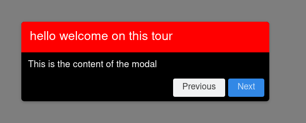
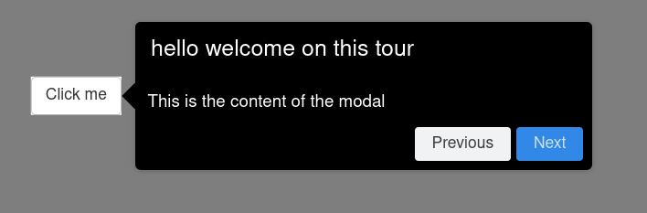
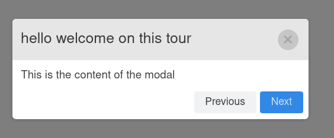

Customize the tour
In this section, we will see how to customize the different elements of a tour with CSS. We will use the following example app throughout this article (except for the Arrow section, where I will add a simple button):
library(shiny)
library(conductor)
guide <- Conductor$new()$
step(
"hello welcome on this tour",
"This is the content of the modal"
)
ui <- fluidPage(
useConductor()
)
server <- function(input, output, session){
guide$init()$start()
}
shinyApp(ui, server)You will only have to add the following code in fluidPage() to test the CSS:
tags$head(
tags$style(
HTML("<CSS code here>")
)
)Title & content
The classes shepherd-header, shepherd-element, shepherd-title, and shepherd-text control the style for the title and the content of the modal.

.shepherd-header {
background-color: red !important;
}
.shepherd-element {
background-color: black;
}
.shepherd-title {
color: white
}
.shepherd-text {
color: white
}Arrow
The style of the arrow can be modified with the class shepherd-arrow.

.shepherd-element {
background-color: black;
}
.shepherd-header {
background-color: black !important;
}
.shepherd-title, .shepherd-text {
color: white
}
.shepherd-arrow:before {
background-color: black !important;
}Cancel icon & other
The cancel icon can be customized with the class shepherd-cancel-icon. Finally, you can simply start from the default CSS file and modify it as you want. The default CSS can be found here: https://cdnjs.cloudflare.com/ajax/libs/shepherd.js/9.0.0/css/shepherd.css

.shepherd-title {
padding-left: 2.5rem
}
.shepherd-cancel-icon > span {
border-radius: 50%;
background-color: #bfbfbf;
opacity: 0.8;
display: block;
width: 2.8rem !important;
}